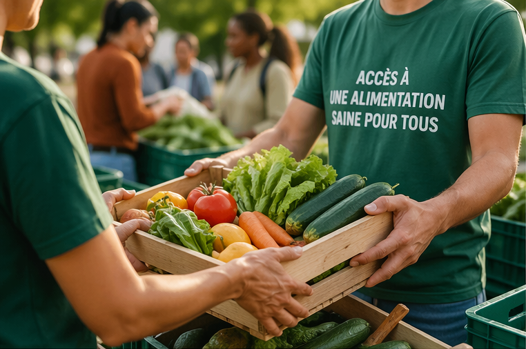
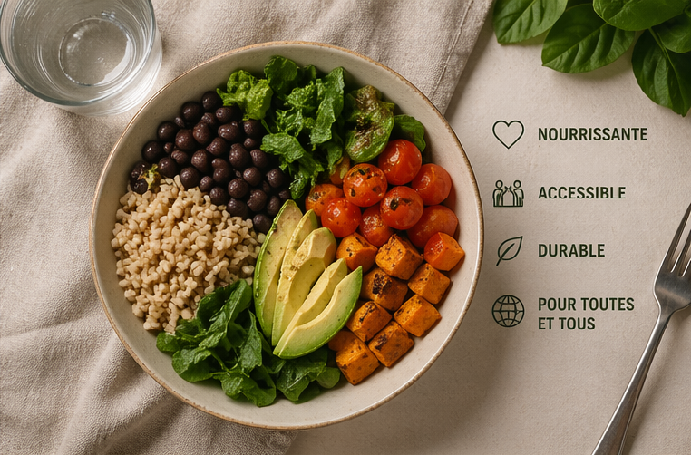
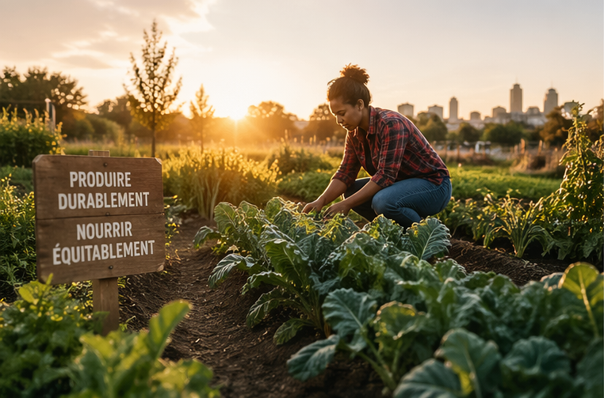

La Sécurité Sociale de l’Alimentation est une proposition qui consiste à construire une 8e branche de la sécurité sociale, une institution publique dotée de trois objectifs :
Elle s’appuie sur trois piliers :
La mesure est à la fois porteuse de transformations sociales, économiques et écologiques, tout en étant faisable et réaliste.
En Belgique, beaucoup ont faim et rogne sur leur budget alimentaire pour faire face aux autres dépenses essentielles que sont le logement, l’énergie, la mobilité, les vêtements… L’inflation, due à la guerre en Ukraine et en grande partie à la spéculation sur le marché mondial de l’alimentation, ajoute une pression à des budgets des ménages déjà soumis à coûts fixes importants, notamment en matière de logement. Il est estimé que 600.000 personnes, soit 5% de la population, ont eu recours à l’aide alimentaire en 2021. Un chiffre alarmant vu que l’aide alimentaire est le filet de sécurité pour les situations humaines les plus dramatiques. En raison des conditions stigmatisantes d’accès, le taux de non-recours est très élevé. L’aide alimentaire ne peut pas être une réponse structurelle à la précarité alimentaire, mais uniquement aux situations extrêmes. A côté de la faim, il y a la malnutrition. Elle touche davantage les populations défavorisées. Mais c’est avant tout un problème général : la moitié de la population est en surpoids. Plus de 16% est en situation d’obésité. Autre indicateur : la consommation de légumes. Seulement 15% de la population mange les 5 portions de fruits et légumes recommandées avec insistance, et 17% n’en mange pas quotidiennement. Sciensano a montré qu’il est environ deux fois plus cher de construire un régime alimentaire équilibré que de se contenter du minimum calorifique nécessaire. Le tableau n’est pas plus brillant du côté de la production. Les revenus des agriculteurs sont en chute libre. Aujourd’hui, leur revenu est environ 44% moindre que celui de la moyenne des travailleurs. La paysannerie a été remplacée par de grandes exploitations agricoles orientées vers des filières internationalisées, standardisées et contrôlées par une poignée d’acteurs économiques. Ces multinationales génèrent, scandaleusement, des bénéfices en milliards d’euros, pendant que la population et la planète tombent malades.

La perte de souveraineté alimentaire, c’est-à-dire la capacité de la population à décider des choix agricoles et alimentaires pour son territoire, rend la décision politique difficile voire impuissante. Les circuits courts apparaissent comme des exceptions, des tentatives glorieuses mais marginales de reconstruire un monde agricole et alimentaire juste : des filières rémunératrices pour tous les acteurs, qui renforcent les écosystèmes dont nous dépendons, et fournissent des aliments sains, nutritifs, permettant de vivre longtemps et en pleine santé. Les circuits courts, en effet, sont soumis à un plafond de verre. Ils sont en concurrence avec des acteurs économiques industriels largement subventionnés, qui n’intègrent pas dans leurs coûts les atteintes à l’environnement, et qui fonctionnent essentiellement avec une main d’œuvre sous payée et exploitée, en Belgique, Europe ou ailleurs dans le monde. Les prix sont faussés car ils n’intègrent pas tous les coûts. Sciensano estime, dans une analyse prudente, que les coûts du surpoids et de l’obésité représentent un surplus de dépense de santé publique de 4,5 milliards d’euros par an entre 2013 et 2017. Il faut assumer que les prix moyens des aliments sont sous-évalués, et donner en conséquence les moyens à la population de bien manger On estime qu’en général, les coûts environnementaux sont aux moins équivalents à ceux de la santé. Il faut à cela rajouter que les filières industrielles sont subventionnées massivement par la Politique agricole commune, et toutes sortes de subsides de soutien économique aux acteurs privés, notamment industriels. Il faut assumer que les prix moyens des aliments sont sous-évalués, et donner en conséquence les moyens à la population de bien manger. Au final, nous payons les produits low-cost une fois en magasin, une fois supplémentaire en soin de santé, une fois encore en réparation environnementale, et une fois encore en subsides. Il est évident que des filières aux prix justes et fonctionnant avec peu subsides, beaucoup d’huile de coude et des efforts frôlant l’épuisement sont difficilement « compétitives ». De plus, faire croire que l’orientation des systèmes alimentaires est entre les mains des consommateurs aux ressources (très) limitées relève de la pensée magique – voire de la mauvaise foi. Il faut assumer que les prix moyens des aliments sont sous-évalués, et donner en conséquence les moyens à la population de bien manger.

Face à ces constats, nous sommes convaincus que la réappropriation de ce que produit et mange la population belge ne pourra se faire que collectivement, avec une implication des pouvoirs publiques. En se basant sur des réflexions conduites au croisement de la sécurité sociale, de la précarité alimentaire, de la souveraineté alimentaire a émergé l’idée de mettre en place une sécurité sociale de l’alimentation. Il s’agit, en d’autres termes, de permettre la réalisation du droit à l’alimentation en s’inspirant de la sécurité sociale actuelle, tout en tirant partie des leçons du passé. La proposition se décline en trois piliers.
Premièrement, il faut constituer un pot commun de solidarité, qui permettra de mutualiser les risques, les coûts et les vulnérabilités. Le budget de la sécurité sociale, actuellement d’environ 100 milliards annuellement, est principalement fondé sur la cotisation salariale et patronale. Il est complété par une dotation de l’Etat. Le financement de la SSA reposerait sur les mêmes principes : une augmentation des coti sations5, une contribution proportionnelle au re venu, et une participation de l’Etat qui pourrait provenir, par exemple, d’un impôt sur les bénéfices des multinationales de l’agroalimentaire et de la grande distribution ou d’une augmentation des accises sur les produits nutritionnellement malsains.
Deuxièmement, il faut s’assurer que le pot est redistribué à toute la population. Il serait faux de penser que le problème ne vient que de la consommation des populations les plus précaires : il est général. Concrètement, tous les adultes du pays recevraient automatiquement une allocation mensuelle6, versée sur une carte électronique (ou éventuellement en format papier nominatif), à la manière des titres-repas ou des écochèques. L’automatisme implique qu’il ne faille pas le demander, ce qui supprime de facto les risques de non-recours pour toute personne légalement résidente7. Le niveau de ce montant détermine le montant nécessaire des cotisations du premier pilier (voir plus bas, progressivité). A long terme, ce montant serait de 150 euros par adulte (50% pour les enfants). Cette somme correspond par convention au montant minimum nécessaire pour manger correctement. Il ne faut pas oublier qu’elle complète les budgets déjà existants. Pour encourager le phénomène de redistribution, il serait souhaitable que les personnes doté (quasi automatiquement) du statut de bénéficiaire de l’intervention majorée puissent recevoir un montant supérieur. Elles pourraient ainsi toucher 150 euros alors que le reste de la population toucherait 100 euros.
Troisièmement, le montant ne pourrait être dépensé que pour des produits conventionnés. Dans la sécurité sociale de la santé, certains médicaments sont conventionnés, et donc remboursés, et d’autres ne le sont pas. La même logique s’appliquerait à la SSA : seuls des produits répondant à des critères de durabilité, de circuit court et de justice sociale et économique pourront être achetés avec la carte. Ces produits auront été officiellement conventionné par une administration publique de l’alimentation, à instaurer. Cet organisme gérera une banque de donnée des produits conventionnées, et s’assurera que la carte SSA puisse être utilisée partout où des produits conventionnés seraient en vente, y compris dans les fermes. Il faut préciser que ces critères seront évolutifs, pourront être complétés, mais pas supprimés, et seront l’objet de discussions publiques, aussi larges que possibles, dans une optique de démocratie alimentaire. Ils seront alignés avec les objectifs des stratégies régionales alimentaires (Good Food à Bruxelles, le Référentiel Alimentation Durable en Wallonie, la récente Voedselstrategie en Flandre). Il est envisagé que les Conseils de politique alimentaire puissent remettre des avis consultatifs sur les produits, en faveur ou défaveur de leur conventionnement, et servent de guichet pour les producteurs ou transformateurs voulant conventionner des pro duits. Bien que le pot commun sera redistribué essentiellement via la carte aux consommateurs, des fonds seront rendus disponibles aux structures pour adapter leur offre et/ou leurs magasins à l’accueil des produits conventionnés. La sécurité sociale de l’alimentation s’appuiera sur une institution fédérale pour collecter les fonds (compétence sécurité sociale), et, via un accord de coopération, sur une institution régionale pour organiser le conventionnement (compétence agricole). Néanmoins, il est possible d’envisager une SSA au niveau régional.

Il est crucial de noter que la SSA nécessite une mise en place progressive. D’abord, il n’existe pas une offre suffisante en Belgique pour répondre à l’inci tant des 150 euros par mois en produits durables, circuit courts et justes. Les filières doivent progressivement s’adapter à cette nouvelle donne. Ensuite, les montants nécessaires au financement d’une SSA à plein régime sont colossaux. Environ 17 mil liards d’euros par an (15,8 milliards pour les adultes et 1,57 milliards pour les enfants), ce qui s’approche d’une hausse de 10% des cotisations salariales : un objectif politiquement irréalisable à court terme. En revanche, il est possible de commencer avec un montant plus bas. A 50 euros par mois, il faut augmenter la cotisation de 3% ; dans un contexte d’inflation comme le nôtre, cela reste raisonnable. Et en visant 150e par an (ce qui s’approche des dépenses annuelles en Bio en Belgique par ménage), ce ne sont plus que 1,45 milliards, soit moins que 1% de hausse des cotisations. Les atteintes aux droits fondamentaux, et en particulier au droit à l’alimentation sont inacceptables en Belgique comme ailleurs. La SSA est une proposition qui répond à des enjeux fondamentaux et à des attentes fortes de la population en termes de justice sociale, de transition agroécologique, de mobilisation démocratique et de relocalisation. Elle est ambitieuse, mais pas inatteignable. Bien que nos réflexions soient avancées, le sujet est complexe et doit être approprié au départ de points de vue très divers. Nous n’y arriverons qu’en travaillant ensemble et en acceptant d’adopter un point de vue systémique sur l’alimentation capable de transcender les désagréments individuels que tout changement important induits.